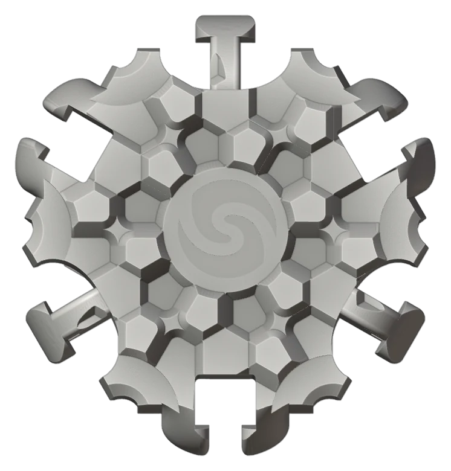
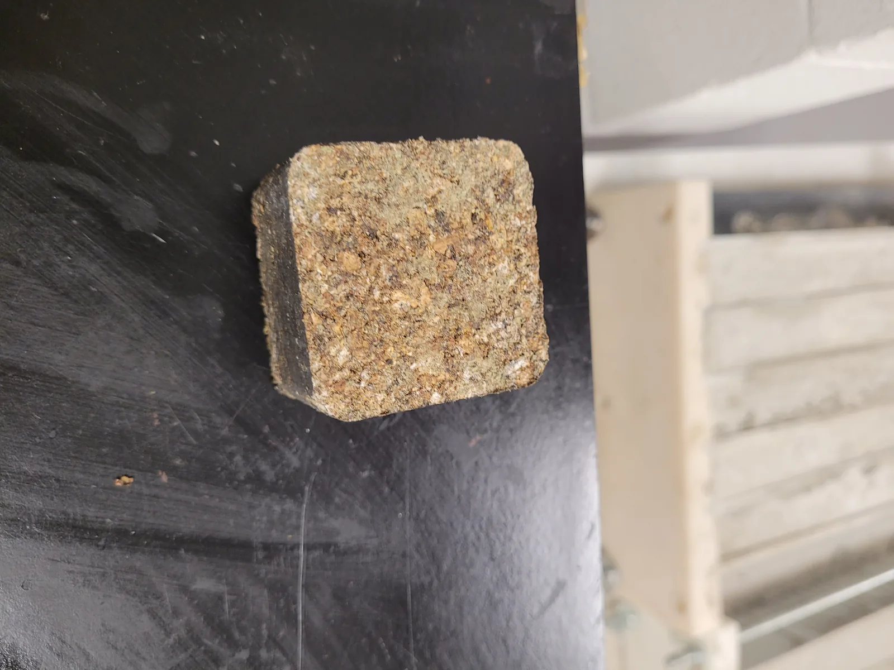
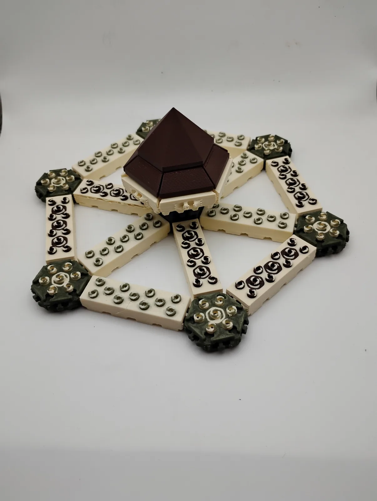

Marks of progress
Ten articles that follow SeaBrick from a research document in 2021 to the mineral-foam brick of 2026. They are written from the project's own records and dated by the period they cover.

Mineral foam and fibre: where the materials strategy stands
The current SeaBrick material is a light mineral-composite core inside a denser mineral shell, reinforced with short plant fibres. Here is the thinking, and the open questions.

An afternoon with a thousand bricks
On 13 June 2026 a small group of friends, advisors and one very focused four-year-old spent an afternoon building with about a thousand printed model bricks. It was the first time the whole family of shapes had been in one room.

The shape of a brick
Five years, twenty-odd versions and a few thousand 3D prints: how the SeaBrick went from a square slab to a hexagonal system brick.

When the seaweed did not arrive
The year SeaBrick learned that a brilliant material is only as good as its supply chain, and found that flax and hemp could do the job the kelp had been doing.

A paper trail: SeaBrick's patent history
A restrained account of what has been filed, when, and what it does and does not mean.

Keeping the water out
A floating brick lives or dies by what water does to it. The 2025 waterproofing study, and the newer idea of sealing cavities with gel, are two answers to the same question.

A research year on two coasts
In 2024 the materials work moved to Perth, Western Australia, the brick design took a large step with the hinge-lock concept, and a small Ocean Supercluster grant brought the research programme back to Vancouver for 2025.

A spotlight, an accelerator and an Earthshot that got away
In 2023 the project was accepted into the Third Derivative climate accelerator, won the Climate Spotlight Award at the Ocean Impact Pitchfest, and was nominated for the Earthshot Prize. Here is what each of those was, and was not.

The UBC years: six students, a press and a block that floated
SeaBrick's first materials research ran through UBC Materials Engineering: a Capstone team in 2022, a sponsored research agreement with the BioProducts Institute in 2023, and the kelp composite that came to be called Kelpstone.

Why SeaBrick is a nonprofit
SeaBrick Society was incorporated under the Canada Not-for-profit Corporations Act in February 2022, with a single stated purpose: to promote innovation and standards around environmentally sustainable marine infrastructure building materials.